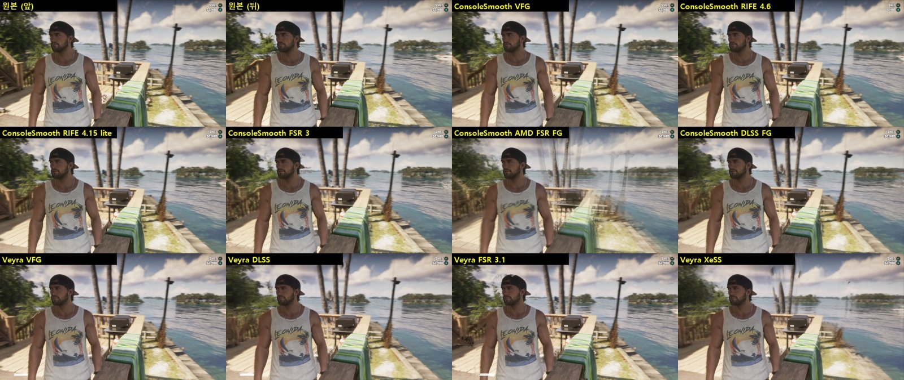
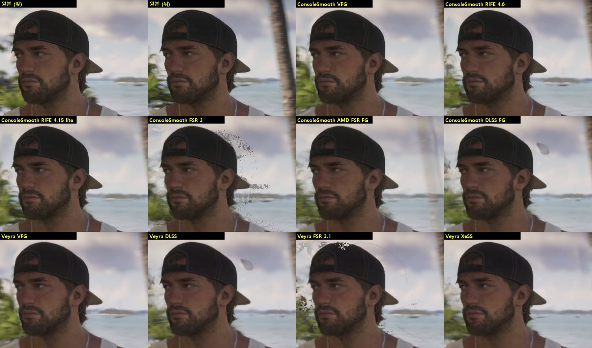
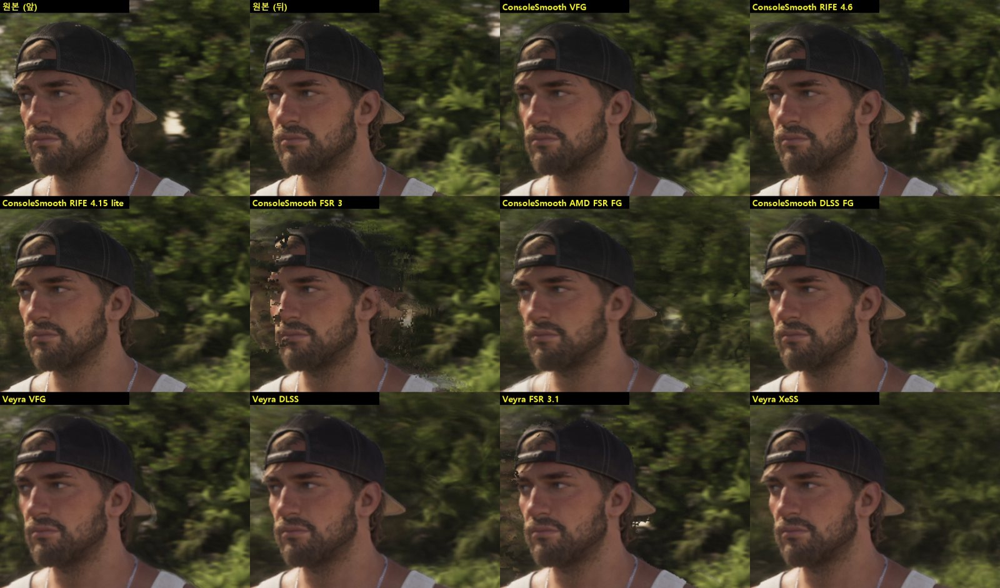
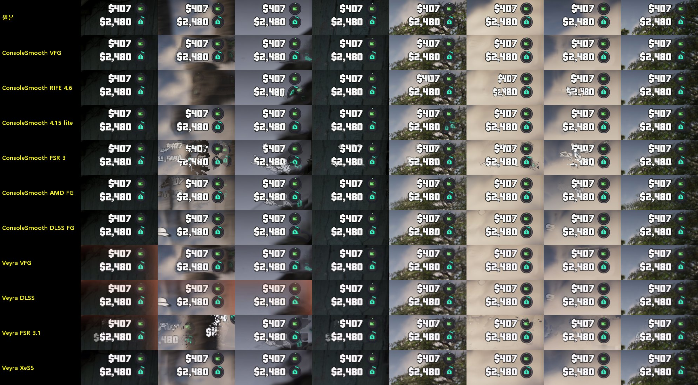
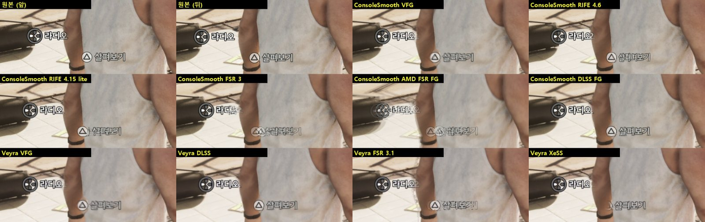
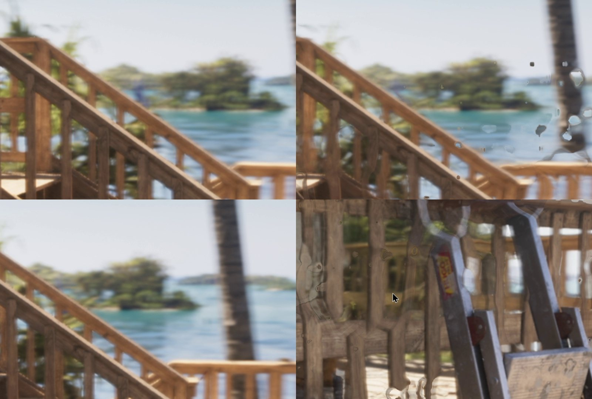

GTA6 (PS5) 시험 결과
PS5 GTA6는 30fps로 나옵니다. 캡처보드로 받은 화면에 중간 프레임을 만들어 60fps처럼 보여 줄 때, 프로그램마다 새 화면이 얼마나 고르게 나오는지, 만든 화면이 얼마나 깨지는지 비교했습니다. 2026년 11월 19일 1차 결과입니다.
두 가지 방식으로 시험한 이유
새 화면 간격(끊김 느낌)은 실제 게임으로 쟀습니다. PS5에서 GTA6를 실제로 켜 두고, 리모트 플레이 매크로로 같은 카메라 동작을 반복하면서 각 프로그램이 실시간으로 만든 화면을 그대로 녹화했습니다. 프로그램마다 따로 돌렸으므로 게임 속 장면은 매번 조금씩 다릅니다.
깨짐·잔상(화질)은 같은 입력으로 비교했습니다. 게임은 매번 카메라 방향, 캐릭터 위치, 햇빛이 달라져서 실시간 녹화로는 같은 순간을 나란히 볼 수 없습니다. 그래서 PS5 화면을 캡처보드로 한 번 무손실 녹화하고, 이 원본 하나를 모든 프로그램에 넣어 같은 순간에 만든 프레임끼리 비교했습니다.
새 화면 간격: 실제 게임 (보트 장면)
보트 위에서 카메라를 좌우·위아래로 돌리는 매크로를 프로그램마다 두 번씩 실행하고, 화면 전체를 녹화해 새 화면이 나온 시각을 쟀습니다. 60fps 화면에서 새 화면이 12.5~20.8ms 간격으로 나온 비율입니다. 높을수록 고르게 움직입니다.
막대 하나가 화면이 실제로 움직인 순간입니다(느린 좌우 250ms). 원본은 33ms마다, ConsoleSmooth는 16.7ms마다 나옵니다. Lossless Scaling과 Veyra는 새 화면 두 장이 4~8ms 간격으로 붙어 나오고 25~30ms를 쉽니다.
| 조건 | 실제 움직인 새 화면/초 | 고른 간격 | 그래픽카드 전력 (W) |
|---|---|---|---|
| 원본 30fps (LLCV, 생성 없음) | 28.9 | 0.0% | 82 |
| ConsoleSmooth · NVIDIA Video Frame Generation | 54.8 | 89.5% | 85 |
| ConsoleSmooth · AMD FSR 프레임 생성 | 54.2 | 77.3% | 90 |
| ConsoleSmooth · FSR 3 | 53.2 | 75.2% | 87 |
| ConsoleSmooth · NVIDIA DLSS 프레임 생성 | 53.5 | 74.2% | 97 |
| ConsoleSmooth · RIFE 4.15 lite | 53.5 | 62.2% | 114 |
| ConsoleSmooth · RIFE 4.6 | 53.4 | 58.3% | 111 |
| Lossless Scaling + OBS 프로젝터 | 54.1 | 16.4% | 109 |
| Veyra · Intel XeSS | 60.0 | 13.9% | 122 |
| Veyra · NVIDIA Video Frame Generation | 63.0 | 12.4% | 108 |
| Veyra · FSR 3.1 | 55.5 | 9.3% | 98 |
| Veyra · DLSS 프레임 생성 | 55.5 | 9.1% | 104 |
| Lossless Scaling + LLCV | 54.8 | 6.5% | 123 |
두 번 평균. 그래픽카드 전력은 컴퓨터 전체 값이라 Streaming Center·LLCV·OBS·Veyra 자체 몫이 들어 있습니다(생성 없이 LLCV만 81.6W). Veyra VFG·XeSS는 1초에 바뀐 화면이 100장 안팎이지만, 늘어난 부분은 거의 같은 화면 사이에 끼운 작은 변화입니다.
새 화면 간격: 실제 게임 (걷기 장면)
앞으로 걷고, 카메라를 빠르게 돌리고, 다시 돌아오는 20초 매크로입니다. 결과는 보트 장면과 같습니다.
| 조건 | 실제 움직인 새 화면/초 | 고른 간격 |
|---|---|---|
| 원본 30fps (LLCV, 생성 없음) | 28.4 | 0.0% |
| ConsoleSmooth · NVIDIA Video Frame Generation | 53.6 | 86.3% |
| ConsoleSmooth · FSR 3 | 52.5 | 80.6% |
| ConsoleSmooth · AMD FSR 프레임 생성 | 50.6 | 74.9% |
| ConsoleSmooth · NVIDIA DLSS 프레임 생성 | 50.5 | 71.2% |
| ConsoleSmooth · RIFE 4.6 | 52.5 | 68.8% |
| ConsoleSmooth · RIFE 4.15 lite | 52.9 | 65.2% |
| Lossless Scaling + LLCV | 55.2 | 12.8% |
| Veyra · Intel XeSS | 57.0 | 12.8% |
| Lossless Scaling + OBS 프로젝터 | 54.5 | 10.3% |
| Veyra · DLSS 프레임 생성 | 54.5 | 8.8% |
| Veyra · NVIDIA Video Frame Generation | 54.7 | 8.7% |
| Veyra · FSR 3.1 | 54.8 | 7.7% |
깨짐·잔상: 같은 입력으로 1차 판별
무손실 원본(2분 8초) 하나를 모든 프로그램에 넣고, 카메라가 빠르게 돌거나 얼굴이 보이는 8개 순간에서 새로 만든 프레임만 골라 확대해 봤습니다. 각 프로그램의 기본 설정 그대로입니다.
| 프로그램 | 모델 | 깨짐 | 잔상 | 얼굴 일렁임 | 글자 깨짐 | 메모 |
|---|---|---|---|---|---|---|
| ConsoleSmooth | NVIDIA Video Frame Generation | ○ | △ | ○ | ○ | 가장 깨끗함. 난간·야자수 가장자리에 약한 잔상 |
| ConsoleSmooth | RIFE 4.6 | ○ | △ | ○ | ×* | 얼굴은 깨끗함. 화면 정보(돈) 8곳 중 4곳에서 겹치거나 사라짐, 버튼 글자 두 겹 |
| ConsoleSmooth | RIFE 4.15 lite | ○ | △ | ○ | △ | 야자수 잔상, 버튼 글자 번짐 |
| ConsoleSmooth | FSR 3 | × | △ | × | × | 머리·모자 둘레에 네모 블록, 화면 정보 8곳 중 5곳 깨짐 |
| ConsoleSmooth | AMD FSR 프레임 생성 | △ | × | △ | × | 야자수·기둥이 두 겹, 버튼 글자 크게 깨짐 |
| ConsoleSmooth | NVIDIA DLSS 프레임 생성 | × | △ | ○ | △ | 하늘에 떠다니는 얼룩 2곳. 글자 자체는 정상 |
| Veyra | NVIDIA Video Frame Generation | ○ | △ | ○ | ○ | ConsoleSmooth VFG와 거의 같음 |
| Veyra | DLSS 프레임 생성 | × | △ | ○ | △ | ConsoleSmooth DLSS와 같은 얼룩이 같은 자리에 생김 → DLSS 모델의 특성 |
| Veyra | FSR 3.1 | × | △ | △ | × | 모자 둘레에 점·블록, 화면 정보 8곳 중 3곳이 두 겹 또는 깨짐 |
| Veyra | Intel XeSS | ○ | × | △ | ○ | 움직임을 따라가지 않고 두 장을 섞어서 화면 전체가 흐리고 두 겹 |
| Lossless Scaling | LSFG 3.1 + LLCV | × | × | – | – | 하늘·바다 위 물방울 모양 일그러짐과 점, 난간 윤곽 두 겹 (인게임 녹화) |
| Lossless Scaling | LSFG 3.1 + OBS 프로젝터 | × | × | – | – | 난간이 물결처럼 휨 (인게임 녹화) |
* ConsoleSmooth는 같은 입력 비교를 위해 생성 엔진만 따로 돌렸습니다. 이때는 실제 플러그인의 화면 정보(HUD) 보호가 빠지므로, 실제 사용에서는 글자 결과가 이보다 좋을 수 있습니다. Lossless Scaling은 같은 입력 자료가 아직 없어 인게임 걷기 녹화로 봤고, 뒷모습과 화면 가운데만 찍혀 얼굴·글자는 보지 못했습니다.






알아 둘 점
- 1차 결과입니다. 깨짐·잔상은 고른 8개 순간을 눈으로 본 판별이며, 30fps 게임이라 정답 60fps 화면이 없어 점수(dB)는 내지 않았습니다.
- 새 화면 간격은 화면 녹화의 시각으로 쟀습니다. 모니터에 실제로 표시된 시각(PresentMon)으로는 아직 확인하지 않았습니다.
- 지연(조작 → 화면)은 이번에 재지 않았습니다. 젤다 지연 결과는 시험 결과 페이지에 있습니다.
- 보트·걷기 장면은 프로그램마다 따로 실행해서 게임 속 장면이 조금씩 다릅니다. 같은 순간 비교는 위의 같은 입력 판별을 보세요.
- 측정 PC: NVIDIA GeForce RTX 5080, AVerMedia Live Gamer 4K GC573, 1920×1080, PS5 GTA6 스토리 모드. 각 프로그램 기본 설정(Lossless Scaling LSFG 3.1 2배, Veyra 2배).